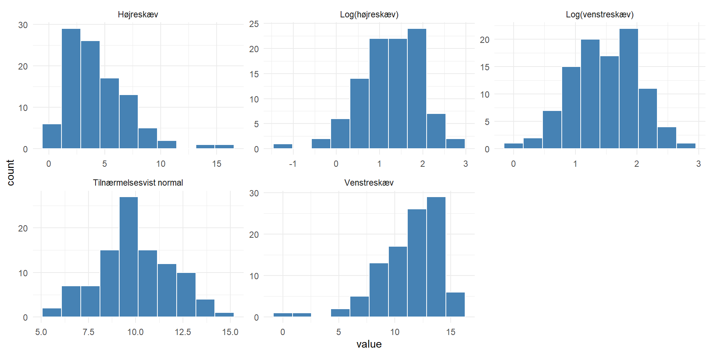

# A tibble: 6 × 3
Y R X
<dbl> <dbl> <dbl>
1 1 1 1.62
2 0 1 1.99
3 0 1 -0.849
4 1 1 1.50
5 0 1 1.34
6 0 1 -0.562Ting at huske
Eksamensopgave 2
Vi skal se på et randomiseret klinisk studie udført på seks forskellige europæiske hospitaler. 349 patienter med leversygdom blev randomiseret til enten den eksperimentelle behadnling UDC (176 patienter) eller placebo (173 patienter)
Udfaldet “failure of medical treatment” blev defineret som enten død eller levertransplantation i den 6 årige undersgelsesperiode. Pateienter blev fulgt fra randomiseringstidspunktet til ovenstående udfald - eller til de 6 år var gået.
Vi får de første 6t observationer i sættet. Y er udfaldsvariablen (1 “treatment failure”), R angiver behandling (1 = UDC), X den standardiserede version af logaritmen af bilirubin (umol/L), målt for hver patient ved starten af studiet
table(Y,R) giver:
R
Y 0 1
0 118 134
1 55 42- baseret på ovenstående table ønske beregnet relativ risiko (med tilhørende 95% KI ) til belysning af effekten af behandlingen på det betragtede udfald. Husk at konkludere.
Risiko ved behandling: 42/(134+42)= 0.2386364
Risiko ved placebo: 55/(118+55) = 0.3179191
RR = 0.2386364/0.3179191 = 0.7506199
log(RR) = log(0.7506199) = -0.2868559
se.(log(rr)) = sqrt(1/42-1/176+1/55-1/173) = 0.174726
et 95% ki for log(rr) findes til; -0.2868559 + c(-1,1)1.960.174726 = -0.62931886 0.05560706
Derfor er 95% ki for RR: exp(c(-0.62931886, 0.05560706)) = 0.5329547 1.0571822
RR er 0.75. Så vi estimerer at behandlingen reducerer treatment failure med 25% med et 95% KI på 0.5329547 1.0571822 Da 1 er indeholdt i KI er der dermed ikke tale om en signifikant effekt.
- Nu udførtes følgende analyse: > model <- glm(Y ~ factor(R) + X, family =“binomial”) summary(model)
der gav dette output:
| Estimate | Std. Error | z value | Pr(>|z|) | |
|---|---|---|---|---|
| (Intercept) | -1.3922 | 0.2088 | -6.668 | 2.60e-11*** |
| factor(R)1 | -0.9054 | 0.2967 | -3.052 | 0.00227** |
| X | 1.2632 | 0.1571 | 8.043 | 8.79e-16*** |
Hvilken analyse er der tale om. Angiv relevante effektestimater baseret på analysen og formuler konklusioner derfra.
Der er tale om en logistisk regressions analyse, med Y (Treatment failure) som afhængig variabel, og behandling/randomisering som kategorisk uafhængig, forklarende variable, samt X (den standardiserede logartime af bilirubin) som kontinuært forklarende variabel. Såvel behandlingen som X er statistisk signifikante på et 5% niveua.
For den forklarende variabel X får vi en estimeret odds ratio (OR) på behandlingen på exp(-0.9054) = 0.4043801 når der kontrolleres for den forklarende variabel X.
Det tilhøreden 95% konfidensinterval findes ved: exp(-0.9054 + c(-1,1)1.960.2967)
OR påp 0.4 svarer til en reduktion i odds for treatment failure på ca 60%, ved aktiv behandling vs. placebo, når der kontrolleres for bilirubin. Da KI ikke indeholder 1, er effekten signifikant.
en ret sjælden opgave

SKAL HAVE JUSTERET LABELS! Hvad kan vi sige om disse fordelinger?
Ud over at vi nok vil blive bedt om at forholde os til hvor gennemsnittene sådan på øjemål ligger, og om der er mere eller mindre spredning i den ene frem for den anden. Så skal vi kunne fortælle at “denne er højreskæv” “denne er venstreskæv” og de log-transformerede data er tilnærmelsesvist normalfordelte.
- Vi får, om logtransformerede data oplyst; Danske piger: log(D-vitaminniveau) gennemsnit: 3.211 sd = 0.492 n = 59
Polske piger: log(D-vitaminniveau) gennemsnit: 3.389 sd = 0.418 n = 61
Beregn variationen på gennemsnittene for det log-transformerede D-vitaminniveau for hhv de danske og polske piger.
Danske: 0.495/sqrt(59) polske: 0.418/sqrt(61)
- Beregn 95% KI for de danske og polske piger separat. Hvordan fortolker vi resultaterne? Kan vi konkludere noget om forskellen i D-viatminniveau mellem de danske og polske piger? Er den signifikant?
danske:
[1] 3.084691 3.337309[1] 3.284102 3.493898Hvert KI indeholder med 95% sandsynlighed den sande værdi for den log-transformerede D-vitaminkoncentration for de to grupper. Intervallerne overlapper, men ingen af de to gennemsnit ligger i det andet KI, og vi kan derfor ikke konkludere om der er en signifikant forskel.
- Udregn teststørrelsen for den approksimative t-test for sammenligning af log(D-vitaminniveua). Brug de beregnede variationer på gennemsnittene. Brug teststørrelsen til at konkludere om forskellen på d-vitaminniveauet er statistisk signifikant på et 5% niveau.
forskel:
::: {.cell}
:::
poolet SEM
Testværdien:
[1] -2.136821Testværdien er større end 1.96 (i absolutte værdier). Og forskellen er derfor signifikant.
p-værdi:
[1] 0.03464261Og der skal ganges med to…
- angtager vi at log(D-vitaminniveau) i begge lande kan beskrives ved en normalfordeling. Beregn et 95% reference interval for log(D-vitaminniveauet) for danske piger. Brug derefter gennemsnit og sd for de polske piger til at beregne hvor stor en andel af dem der forventes at ligge inden for det danske referenceinterval.
Det danske referenceinterval:
[1] 2.24668 4.17532Hvis X er normalfordelt med middelværdi 3.389 og sprednign 0.418, skal vi beregne: P(2.24668 < X < 4.17532) <=> P(X < 4.17532) - P(X < 2.24668)
Vi kan bruge pnorm direkte (cowboytricket)
[1] 0.9668844Eller vi kan standardisere så vi kan bruge standardnormalfordelingen.
sidste eksamenssæt 1
Vi skal se på blodtryksmålinger fra 641 forsøgspersoner i Ghana. Det er et interventionsstudie, der skulle undersøge om en ny behandling kunne sænke blodtrykket for patienter med ukontrolleret hypertension. Der er to behandlingsgrupper: control og treatment. Begge grupper har fået standard behandling med primærpleje, medicinsk konsultation, test og medicin. treatmentgruppen har dertil fået en personligt tilpasset behandling af sygepeljersker med speciale i hypertensionsbehandling. Behandlingen blev randomiseret, og vi har blodtryksmålinger fra baseline (før behandling) og efter 12 måneder. Vi kender patienternes køn. Der var 323 individer i treatment gruppen.
Data har følgende variable:
SBPbl: systolisk blodtryk ved baseline (mmHg) SBP12: systolisk blodtryk efter 12 måneder group (control/treatment) sex (male/female) diff: differensen mellem SBP12 og SBPbl
Gennemsnit og spredning for diff i kontrolgruppen er -16.6 hhv 19.9 De tilsvarende tal i interventionsgruppen er -19.6 og 17.4
- Er der et signifikant fald i blodtrykket i interventionsgruppen i den undersøgte periode. Besvar samme spørgsmål for kontrolgruppen.
Vi starter med SEM for de to grupper:
Intervention: n= 323
Så kan vi beregne 95% KI beregnes for de to grupper:
intervention:
[1] -21.4976 -17.7024kontrol:
[1] -18.78724 -14.41276Ingen af de to KI indeholder 0, så vi kan konkludere at begge behandlinger sænker det systoliske blodtryk signifikant.
- Er faldt i blodtryk signifikant forskelligt i de to gruypper? hvad kan vi konkludere vedrønde effekten af præcisionsbehandlingen på blodtrykket påå baggrund af de beregninger vi har udført indtil videre?
De to KI overlapper, men ingen af dem indeholder gennemsnittet fra det andet KI. så vi kan ikke bruge KI til at konkludere. Vi beregner SEM for differensen:
Det giver os en teststørrelse på forskellen på de to differenser på:
[1] -2.030622Som (i absolutte tal) er større end 1.96 - der er en signifikant forskel.
- Nu udførtes følgende analyser for mænd og kvinder hver for sig: > summary(lm(diff[sex==“female”]~factor(group[sex==“female”])))
| Estimate | Std. Error | t value | Pr(>|t|) | |
|---|---|---|---|---|
| (Intercept) | -16.988 | 1.3556 | -12.527 | <2e-16*** |
| factor(group[sex=='female'])treatment | -5.915 | 1.901 | -3.112 | 0.002** |
summary(lm(diff[sex==“male”]~factor(group[sex==“male”])))
| Estimate | Std. Error | t value | Pr(>|t|) | |
|---|---|---|---|---|
| (Intercept) | -15.893 | 1.594 | -9.968 | <2e-16*** |
| factor(group[sex=='male'])treatment | 1.692 | 2.264 | 0.747 | 0.456 |
Hvilke analyser er er tale om, og hvad kan vi konkludere på baggrund af disse? Der ønskes en fortolkning af værdierne i “Estimate” søjlerne. Giver det anledning til en anden konlusion end den vi fik lige før?
Der er tale om to multiple lineære rgressioner, med diff som kontinuært responsvariabel og group som forklarende, kategorisk (og binær) variabel.
For kvinderne ser vi at blodtrykket i gennemsnit falder med ca 17 mmHg under kontrolbehandling (signifikant, med p ~ 0), og yderligere ca 6 mmHg ved præcisionsbehandlingen (signifikant med p = 0.002)
For mændene ser vi at blodtrykket i gennemsnit falder med ca. 16 mmHg under kontrolbehandling, men at der ikke er signifikant forskel på effekten af de to behandlinger (p=0.456)
Vi har nok behov for en del udgaver hvor diverse er reduceret
gad vide hvor det her kommer fra?
analyse for kvinder summary(lm(diff[sex == “female”] ~ factor(group[sex==“female”])))
analyse for mænd summary(lm(diff[sex == “male”] ~ factor(group[sex==“male”])))
Hvilke analyser?
lineær regression. Diff som respons og group som forklarende variabel. Den forkarende variabel er kategorisk.
intercept for de to grupper viser forskellen i blodtryk - i begge tilfælde et fald. Den forklarende variabel viser at blodtrykke falder yderligere (statistisk signifikant) for kvinder, men ikke for mænd.